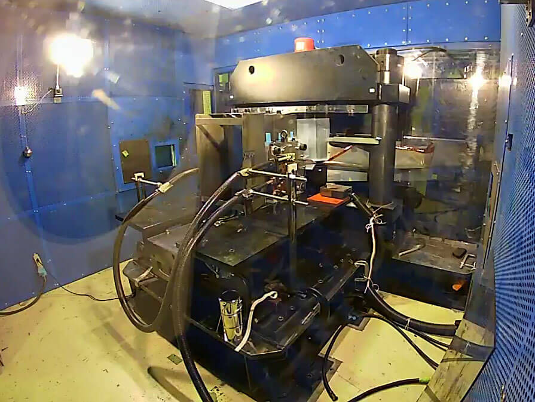
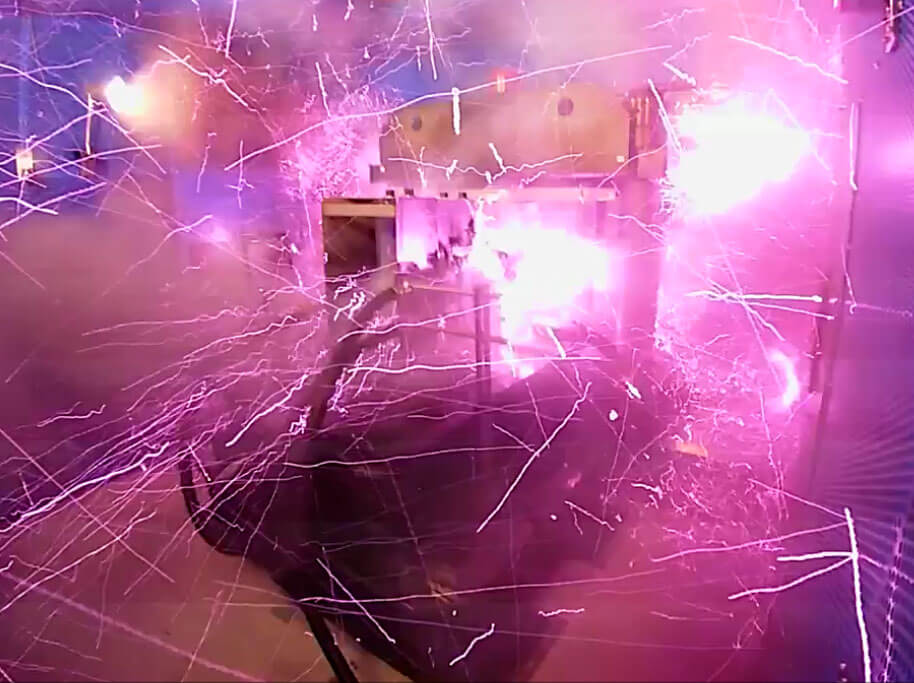

ဒီ ကမ္ဘာ့ အားအကောင်းဆုံး သံလိုက်စက်ကွင်းကို တိုကျို တက္ကသိုလ် ရူပဗေဒ ဌာနက ပညာရှင် တွေက ဖန်တီးခဲ့ ကြတာ ဖြစ်ပါတယ်။
“သံလိုက်စက်ကွင်း ပြင်းအား တက်စလာ ၁,၀၀၀ (1000 tesla) ကျော်သွားတဲ့ အခါ ဒီ သံလိုက်စက်ကွင်းကို အသုံးချနိုင်မယ့် စက်ဝင်စားစရာ အခွင့်အလမ်း သစ်တွေ ပေါ်ထွက်လို့ လာပါတယ်” လို့ တိုကျို တက္ကသိုလ်က ဒီ သုတေသနကို ဦးဆောင်တဲ့ သိပ္ပံ ပညာရှင် တာကီယာမ (Takeyama) က ရှင်းပြပါတယ်။
“ဥပမာ အီလက်ထရွန် တွေရဲ့ ရွေ့လျားမှုကို သူတို့ ပုံမှန် ရှိနေတဲ့ ပတ်ဝန်းကျင် အပြင်ဖက်မှာ လေ့လာ နိုင်လာပါတယ်။ ဒါ့ကြောင့် အီလက်ထရွန် တွေကို အမြင်သစ်ကနေ လေ့လာ နိုင်လာပါတယ်။ နောက်ပြီး လျှပ်စစ်သံလိုက် အားသုံး အီလက်ထရောနစ် ကိရိယာ အသစ်တွေလဲ တီထွင်လာ နိုင်စေပါတယ်။ အခု သုတေသနက တွေ့ရှိချက်တွေဟာ အဏုမြူ ဒြပ်ပေါင်း ဓါတ်ပြုမှု (Nuclear Fusion) သုတေသန ပြုနေ သူတွေ အတွက်လဲ အသုံးဝင်လာမှာ ဖြစ်ပါတယ်” လို့ သူက ဆက်ရှင်းပြ ပါတယ်။
အခု သုတေသန တွေ့ရှိချက်တွေကို Review of the Scientific Instrument နည်းပညာ သုတေသန ဂျာနယ်မှာ တင်ပြ ခဲ့ပါတယ်။
အခုလို အလွန် အင်မတန် အင်အား ပြင်းထန်တဲ့ လျပ်စစ်သံလိုက် စက်ကွင်း ရရှိဖို့ သိပ္ပံ ညာရှင်တွေဟာ ပုံမှန် နဲ့ မတူတဲ့ နည်းစနစ်ကို အသုံးပြုခဲ့ ကြပါတယ်။
Electromagnetic flux-compression (EMFC) လို့ အမည်ပေးထားတဲ့ ဒီ နည်းစနစ်မှာ အစိတ်အပိုင်း နှစ်ပိုင်း ပါဝင်ပါတယ်။
ပထမ အပိုင်းကတော့ သံလိုက်စက်ကွင်း ပြင်းအား ၃.၂ တက်စလာ ထုတ်ပေးနိုင်တဲ့ လျှပ်စစ် သံလိုက်စက်ကွင်း ထုတ်စက် ပါဝင်ပါတယ်။ ဒီ ပြင်းအား ၃.၂ တက်စလာ ဆိုတာက တကယ်ကဘယ်လောက်မှတော့ မရှိပါဘူး။


ဒီအခါ ဘာဖြစ်လာလဲ ဆိုတော့ လျှပ်စစ်သံလိုက် စက်ကွင်း ထုတ်စက် သေးသေးလေး ထဲကို မြောက်များလှစွာသော စွမ်းအင်တွေ ရုတ်ချည်း ဝင်ရောက်လာ ပါတယ်။
ဒီ အခါ အဆမတန် များတဲ့ လျှပ်စစ်သံလိုက် လှိုင်းတွေကို ဒီ စက် သေးသေးလေးက နေရာ ကျဉ်းကျဉ်း လေးမှာ ဖိသိပ် ထည့်လိုက် သလို ဖြစ်သွားပါတယ်။
ရလဒ်ကတော့ သံလိုက် စက်ကွင်းရဲ့ ပြင်းအား ရုတ်တရက် အဆမတန် ဆောင့်တက်သွား တာပဲ ဖြစ်ပါတယ်။ ဘယ်လောက် ထိ တက်သွား သလဲ ဆိုတော့ ၁,၂၀၀ တက်စလာ အထိ ထိုးတက်သွားပါတယ်။
ဒါပေမယ့် ဒီလို အလွန် ပြင်းထန်တဲ့ လျှပ်စစ်သံလိုက် စက်ကွင်းရဲ့ ဝန်ကို စက်က သိပ်ကြာကြာ မခံနိုင် ပါဘူး။ ဒီလို ပြင်းထန်တဲ့ လျှပ်စစ် သံလိုက် စက်ကွင်းကြာင့် Shock wave တုန်ခါလှိုင်း တွေ ထွက်ပေါ်လာပြီး တဲ့နောက်မှာတော့ ဒီ သံလိုက် စက်ကွင်း ထုတ်စက်ကြီးဟာ ပေါက်ကွဲ ထွက်သွားပါတယ်။
မူလက ဒီစက်ရဲ့ ဝန်ခံနိုင်ရည်ကို ပညာရှင် တွေက တွက်ချက်ရာမှာ အများဆုံး တက်စလာ ၇၀၀ ထိပဲ ခံနိုင်မယ်လို့ ခန့်မှန်းခဲ့ ကြတာပါ။ ဒါပေမယ့် အခု တကယ်လက်တွေ့ စမ်းသပ် ရာမှာတော့ တက်စလာ ၁,၂၀၀ ထိ ရောက်မှ ပေါက်ကွဲ သွားတာကို တွေ့ကြရပါတယ်။
ဒီလို ပြင်းထန်တဲ့ လျှပ်စစ် သံလိုက် စက်ကွင်းကို ဖန်တီးနိုင်တဲ့ အချိန်ကလဲသိပ်တော့ ကြာလှတာ မဟုတ်ပါဘူး။ ဒီ စက်ဟာ ၁,၂၀၀ တက်စလာ ပမာဏကို ၄၀ မိုက်ကရို စက္ကန့် (40 microsecond) အထိ ကြာအောင် ထိန်းထား နိုင်ခဲ့တာလို့ သိရပါတယ်။ ၁ မိုက်ကရို စက္ကန့်ဟာ ၁ စက္ကန့်ရဲ့ တစ်သန်းပုံ တစ်ပုံ နဲ့ ညီမျှတဲ့ အတိုင်းအတာ ဖြစ်ပါတယ်။
အခု ပညာရှင်တွေ ၂၀၁၈ ခုနှစ်က ပြုလုပ်ခဲ့တဲ့ ကမ္ဘာ့ အင်အား အကောင်းဆုံး လျပ်စစ်သံလိုက် စက်ကွင်း ထက် အားကောင်းတဲ့ သံလိုက်စက်ကွင်းကို အခုထိ သိပ္ပံ ပညာရှင်တွေ ဖန်တီးနိုင်စွမ်း မရှိသေးဘူး လို့လဲ သိရပါတယ်။
Reference: Scientists blow up their lab after creating strongest magnet ever | BigThink